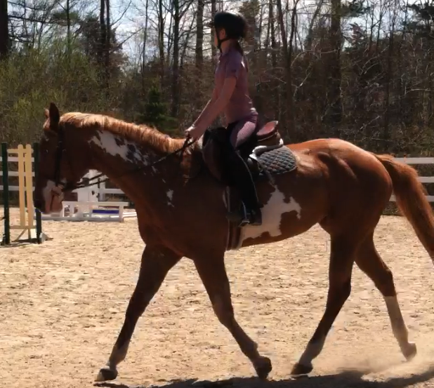

Country Road Stables
Welcome to Country Road Stables! We offer a full service boarding and lesson facility. Our knowledgeable staff customizes each horse's and owner's experience. We offer individualized care and feeding programs, all day turnout in small groups or in individual paddocks, and individual or group lessons. We are open to horse owners of all disciplines, and emphasize safety and fun!
Meet Our Trainers
Taryn Sheehan
Taryn has decades of experience in the equestrian field. She grew up riding and competing in New England. She now teaches her students to compete in the show ring, ride cross country or trail ride on the beach. She also teaches the fundamentals of horsemanship and horse safety. She is the proud mom of a yearling mare, Spirit and 14 year old Otty (mama to Spirit).
Brianna Burns
Brianna is the assistant trainer at Country Road. She has almost 2 years of experience teaching riders, and ten years of equestrian experience. She is the proud mom of Annabel, who came to Country Road as a rescue horse from the auction. Annabel now competes at horseshows, goes cross country riding, and enjoys long walks on the beach.
Our professional staff offers personalized, high quality care for you and your horse. The barn is staffed from 6am to 5pm, 7 days per week, and is open for boarder use from 5am to 9pm, 7 days per week.
We offer:
- Indoor and outdoor riding ring
- Heated viewing room, bathroom and tack room
- Heated wash stall with hot and cold water (bathing materials as needed)
- Individual lockers
- Staff available 24/7
For boarders, we offer a 12x12 stall with an attached in and out or window, or a 12x10 enclosed stall on the aisle
- All day, individual or group turn-out (weather permitting)
- Blanketing dependent on weather/turnout, application of any boots, fly-spray, masks
- Scheduling of vaccinations and deworming
- Scheduling and handling of horse for blacksmith
- Feeding, a personalized diet and/or supplements
- Laundry (wraps, sheets, saddle pads)
- Private locker storage in tack room, additional space available upon request
- Staff available 24/7
Meet Our Horses
We have 8 lesson horses that can accommodate any riding level. Whether you are looking to improve your jumping, flatwork, crosscountry or dressage, there is a partner ready for you at Country Road!
Carl
Bubbles
Quinn
- Lessons
- Training
- Summer Programs
At Country Road Stables, our goal is to provide an equine education in a fun, safe and family-centric atmosphere. We offer year round instruction for beginners and more advanced riders. We give 15 minute lessons for children ages 3-5 years old and 30-60 minute lessons for 5 years old to adult students.
Lessons are taught 7 days per week. We charge $40 for 30 minute lessons and $70 for 60 minute lessons. We also offer a Lesson Package; if you pre-pay for 6 lessons you receive a $20 discount!
We have X years of experience training young and green horses. We also train horses with behavioral issues or horses that have become difficult.
If you would like to train your horse to become sound and calm undersaddle, teach your horse to jump, or have your horse become a veteran in the show ring, we can help!
We have partnered with babies and green horses with some to no previous training, horses with behavioral issues (rearing, bucking, or unresponsiveness to aids - we've experienced it all!).
We've also repurposed horses with varieties of backgrounds. For example, we trained a summer camp trail pony became an undersaddle show horse, a traditional dressage horse to jump, and have repurposed multiple off the track thoroughbreds to become English undersaddle horses.
We pack our day full with horse activities and riding lessons. Our summer programs are a great introduction to or a continued passion for a life of riding.
Our program runs Monday to Friday; drop off is at 9:00 am and pick up at 3:00 PM. We provide snacks, juice, milk and water throughout the day. Each student should bring their own lunch, wear/pack long pants for riding, and wear a shoe with a small heel. We will provide ASTM certified helmets for all riders.